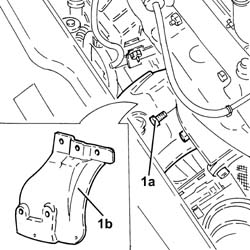

1076A46 heat shield for catalytic preconverter r r
- Path
- Procedures > 10 ENGINE > 1076 EXHAUST PIPES AND SILENCERS > 1076A exhaust pipe fastenings and protections > 1076A46 heat shield for catalytic preconverter r r
- Kind
- repair procedure (removal / refitting; the operation number is the code)
- Applies to
- engines: 2.4 JTD 20v; all production periods
- Interactive page
- https://sloeber94.github.io/elrnDB-a156/en/#/3237882
Applies to: engines: 2.4 JTD 20v; all production periods
 Removing
Removing
 Refitting
RefittingProceed with removal 1048A50 air inlet pipe to turbo charger - r + r .
1. Undo the attachments (1a) and remove the catalytic preconverter heat shield (1b).

Applies to: engines: 2.4 JTD 20v; all production periods
Refitting
RemovingRefit in its seating the catalytic preconverter heat shield and secure it.
Proceed with refitting 1048A50 air inlet pipe to turbo charger - r + r .
Topics linked from this page (1)
Topics that link to this page (8)
- 0010T12 engine oil and filter replace
- 1072C44 exhaust manifold heat shield on bulkhead - r+r
- 1080B40 catalytic pre-converter - r r
- 1084B30 engine oil filter r r
- 1084B34 cartridge engine oil filter support - r + r
- 1084C37 Engine oil supply PIPE to cooling radiator -R.R.
- 1084C38 engine oil delivery and return pipes to cooling radiator - r + r
- 1084C39 Engine oil return PIPE from cooling radiator - R.R.